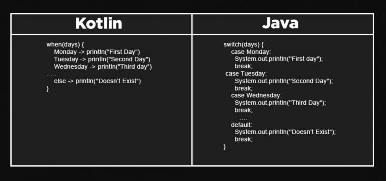

Why Kotlin
Fungsi Kotlin
Sebagai bahasa pemrograman, fungsi Kotlin adalah
membuat aplikasi Android agar dapat berjalan dengan lancar. Tapi, fungsi Kotlin sebenarnya tidak hanya sebatas itu.
Kotlin juga bisa digunakan untuk membuat aplikasi iOS dan web-based karena merupakan bahasa pemrograman multiplatform. Contoh aplikasi yang dibangun menggunakan Kotlin adalah Netflix (iOS), dan Data2viz serta Barclay’s Bank (web based).
Hal ini menguntungkan pengembang, karena mereka tidak perlu menggunakan bahasa pemrograman berbeda untuk membuat aplikasi di berbagai platform.

Kotlin
Front And
Kotlin/JS menyediakan kemampuan untuk mengubah
kode Kotlin Anda, library standar Kotlin, dan semua dependensi yang
kompatibel ke JavaScript. Implementasi Kotlin/JS saat ini menargetkan ES5.
Read More

Android
Tulis aplikasi Android yang lebih baik lebih cepat dengan
Kotlin. Kotlin adalah bahasa pemrograman modern yang diketik secara
statis yang digunakan oleh lebih dari 60% developer Android profesional
yang membantu meningkatkan produktivitas, kepuasan developer, dan keamanan kode.
Read More
Front And
Kotlin sangat cocok untuk mengembangkan aplikasi sisi server.
Ini memungkinkan Anda untuk menulis kode yang ringkas dan ekspresif sambil
mempertahankan kompatibilitas penuh dengan tumpukan teknologi berbasis Java yang ada, semuanya dengan kurva pembelajaran yang mulus
Read More

Keunggulan Kotlin
Kotlin adalah bahasa pemrograman yang ekspresif. Artinya setiap
perintah yang akan digunakan harus dikenalkan atau dideklarasikan
terlebih dahulu.
Selain ekspresif, Kotlin juga merupakan bahasa yang ringkas. Faktanya, Kotlin punya 40% baris kode lebih sedikit dibandingkan Java untuk satu perintah sama.
Aplikasi berbasis Kotlin punya kemungkinan error 20% lebih rendah, berkat adanya mekanisme yang melindungi kode dari error Null Pointer Exception (NPE)